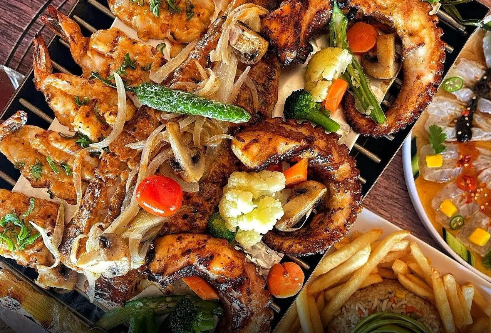

Cocina sinaloenseCarta 2026
Mira lo que trajo el mar
¡puro marisco sabroso!
La casa
Camarón, pulpo, atún y pescado fresco. Ceviches preparados al momento, aguachiles bañados en tu salsa favorita y parrilladas al zarandeado.
pa’ que se te antoje volver

Preparadoal momento
¡y bien sabroso!
- 0tacos de mar
- 0camarones, diez maneras
- 0parrilladas al zarandeado
- 0salsas para tu aguachile
Los imprescindibles
Lo que no te
puedes perder
Nueve platillos que ya son de la casa. Cada uno se ve —y se oye— mejor en movimiento.
01 / 09
Carta 2026
La carta
Cocina sinaloense, completa. Elige una sección o recórrela de principio a fin.
Bebidas
Pa’ brindar
Chela fría, coctelería y destilados.
El servicio
La mesa
Cuatro maneras de sentarte con nosotros.